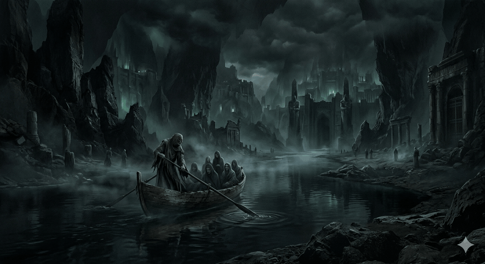
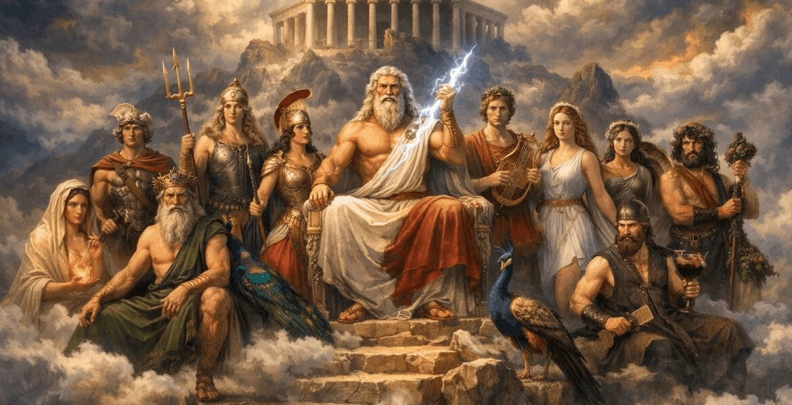

The Underworld
Now you still take one coin to the Underworld, but this coin has 2 sides:
1) you pass the Styx, serve some time the Hades and reincarnate after some time
2) you fall into 9 circles of the Hell and you need to pass then in order to reincarnate
The Underworld is mostly know that there's no colors, everything is grey-colored(or black-white),
but its not it all depends on the coin you were given on your funeral by your family/friends
The two sides of the coin:
1) the coin of Resonance - this coins value is measured spiritually(?) meaning it doesnt matter if
it is a gold,
silver or other coin, its value is measured of what you have done in your life, your memories
instructions: When the dead reach Styx, they give this coin to Charon. There are scales that measure
if you are
"allower" to pass the river or not
- If "allowed" -> you pass the river and the Underworld doesnt seem grey-colored until the next
stage(2nd coin)
- If not "allowed" -> you lose your memory, but no completely, you lose only "good" memories, the
"bad" ones
you still remember + you are cursed to live in these "bad" memories and everything there become
grey-colored.
This will be some kind of 7 circles of the Hell
2) the coin of the "trial of the faces" -> this coins value is also measured spiritually, but now it
counts your
fears, sins and bad memories
instructions:
The creation of humans
ideas of how people were created:
Instead of humans being a divine creation of love, they are a malformed weapon that gained consciousness.
This explains why the gods find humanity so confusing. We aren't their children; we are a glitch in their
design, an "Anomaly" that refuses to fulfill its function. Before humans, the gods fought constantly.
Ares and Athena were fighting each other as usual, Poseidon was triyng to get the title of the King of
the Gods by fighting agains Zeus and Hades, so Medusa was created(or summoned) by Poseidon, a monster who
could turn anyone into a stone by just looking at his/her eyes (Medusas Stone Gaze), she was loyal to her
creator and the Hand of the King, she on the other hand was creating other monsters to battle against Zeus'
army, but during one massive, bloody creation cycle, a small amount of biomass was exposed during
Medusas army creation process. It gained a strange property: it learned from its mistakes. It was smaller
than the other monsters, and it looked pathetic. It was a "Malformation."When the Malformation was thrown onto
the battlefield, it didn't attack. Instead, it saw its own reflection in the blood of a fallen god. For the
first time in history, something looked at itself and thought: "This is pointless." This was the creation of
Consciousness—and it happened purely by mistake. The Malformation (the first human) refused to fight. It ran
away. Seeing it flee, the other "weapons" (monsters) were confused and stopped fighting, leading to a
temporary truce between Ares and Athena. Dionysus and Aphrodite, who were previously just enjoying the show,
became obsessed with this new creature. They saw that the Malformation was lonely in its realization—it had
consciousness, but it was trapped in a body designed for a war it hated. It was miserable, restless, and
incomplete. Dionysus, the god of the external desire, and Aphrodite, the goddess of internal spirit, decided
to "fix" the anomaly. They began trying to "cure" it by showering it with sensory experiences (wine/beauty),
accidentally creating the complex human emotions. They engineered a "counter-balance" of this creation. If
the original Malformation was the "Mind of Disgust" (rejecting the war), they created a partner who was the
"Will of Desire" (the drive to build something new).
They didn't just clone the body; they inverted the psychological blueprint.
Where the first was Cold (Ice), the second was Burning (Fire).Dionysus and Aphrodite realized that these two
prototypes were mirrors. Each possessed half of the "Spark."
They lacked the ability to find peace alone.But when they were together, their "lacks" canceled each other
out. The male prototype provided the caution (the refusal to return to war), and the female prototype provided
the courage (the drive to create a world where they could hide from the gods).When the gods released these two
into the wreckage of the battlefield, they didn't fight. They reproduced.
Because they were designed to "fulfill each other's lacks," they were biologically and psychologically
compelled to seek one another out.

The Olympians
Oceans and earthquakes are still "controlled" by Poseidon, but Medusa(might be changed) is his
wife
Ares+Athena(married) = War + war = Fury + strategy
Dionysus+Aphrodite = Joy/Ease + Beauty/Love = true love

Hero vs olympian gods
3 elements - fire, ice, lightning
Kael'Thas(Invoker) - the choosen one who was meant to rule the world, when Zeus went crazy and
uncontrollable, but in the beginning,
he was a child, a talented child, at the age of 2 he mastered the ice, at 4 fire, and at 7
lightning. He was able to create a tornado,
a meteor falling from the sky, a wall of ice, a storm in the ocean, a sunstrike, summon elementals
which were replicas of him but made
Invoker - married, has a daughter(Apollinaria). Hades decides to steal his daughter and marry her
(like he did with Persephone in OG version). Invoker gets mad and decides to bring her back
at any price, so he started searching for her, sending his summoned replicas of him to every
corner of the World, but didnt find any information of where did she disappear. He started to
learn dark magic, became immortal. He spent few centuries on studying how the time works and
thanks to the dark magic he learned how to control the time, so he tried to go back in time
to find out what happened to his daughter. He finally found out that Hades stole her and decides
to go to the Underworld to face him. Meanwhile, Zeus, the King of the Gods, gets a whisper from
an unknown god that theres is a human who has used dark magic, who is going to the Underworld,
this made Zeus mad, because no mortal can go to the Underworld without dying. So he decided to
go after him and check if its true and what are his reasons. Invoker, reached the Underworld,
found Hades and his daughter, and tried to get her back, but Hades told him that she will stay
here with him, and no mortals can come and tell him what to do. Invoker, who has mastered
fire/ice/lighting tried to treat him and this led them to battle. Zeus arrived at that moment
and stopped the fight, he asked them both what happened. He concluded that the mortal is guilty
(he took the side of Hades), and sent him back to the Earth. Invoker, who was mad at Zeus' decision
decides to battle the Olympians and bring his daughter back.
of fire/ice/lightning